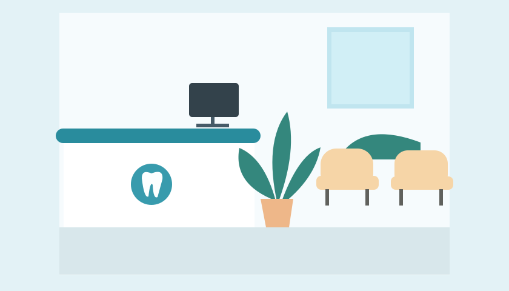

دندانپزشکی با آرامش.
مراقبت از لبخند، با حوصله و به زبان ساده. برای بزرگسالان و کودکان.

● پیشگیری● زیبایی● کودکان
خدمات کلینیک
اولین مراجعهٔ شما
- ۱. گفتوگو
- از انتظارها و تجربههای پیشین صحبت میکنیم.
- ۲. بررسی
- پزشک وضعیت دندانها و لثه را بررسی میکند.
- ۳. برنامهٔ مراقبت
- پرسشهای شما و مرحلهٔ بعد را مرور میکنیم.
برای شما وقت میگذاریم.
پیش از هر تصمیم فرصت دارید دربارهٔ مراحل و هزینهها سؤال کنید. کودکان میتوانند با همراه خود با فضای مطب آشنا شوند.
سؤالهای شما
برای مراجعهٔ اول چه بیاورم؟
سوابق درمان و عکسهای قبلی را در صورت دسترسی همراه داشته باشید.
برای کودک هم میتوانم نوبت بخواهم؟
سن کودک و دلیل مراجعه را در درخواست بنویسید.
ساعت پذیرش
- شنبه تا دوشنبه
- ۹ تا ۱۷
- سهشنبه و چهارشنبه
- ۹ تا ۱۵
- پنجشنبه
- با هماهنگی قبلی
برای یک دیدار زمان بگذارید.
 انتخاب این طرح
انتخاب این طرح